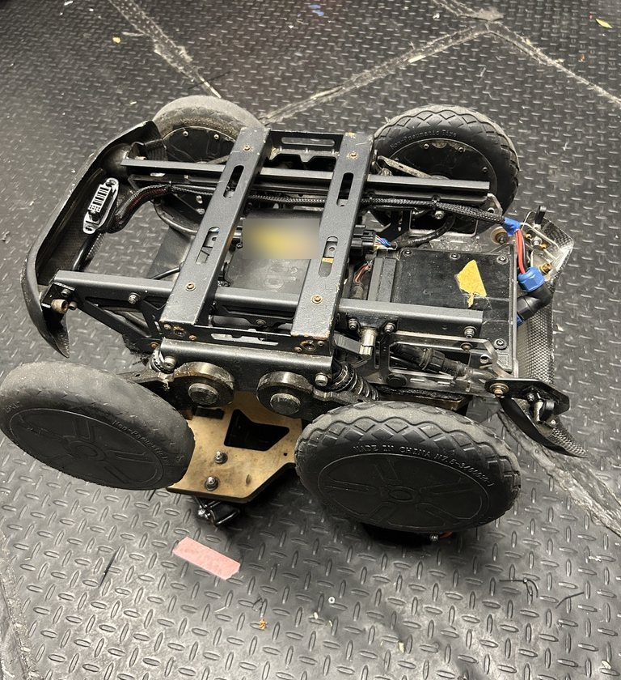
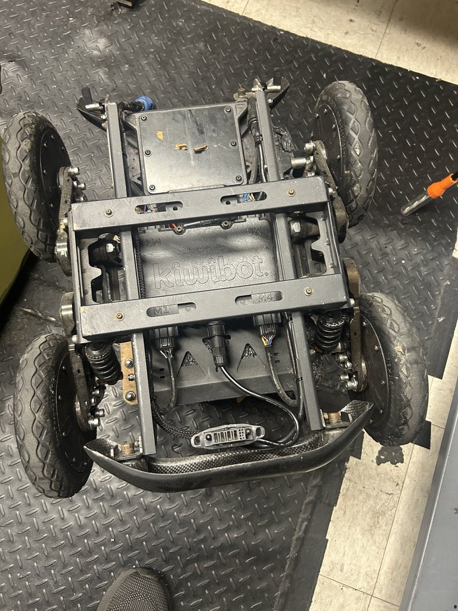
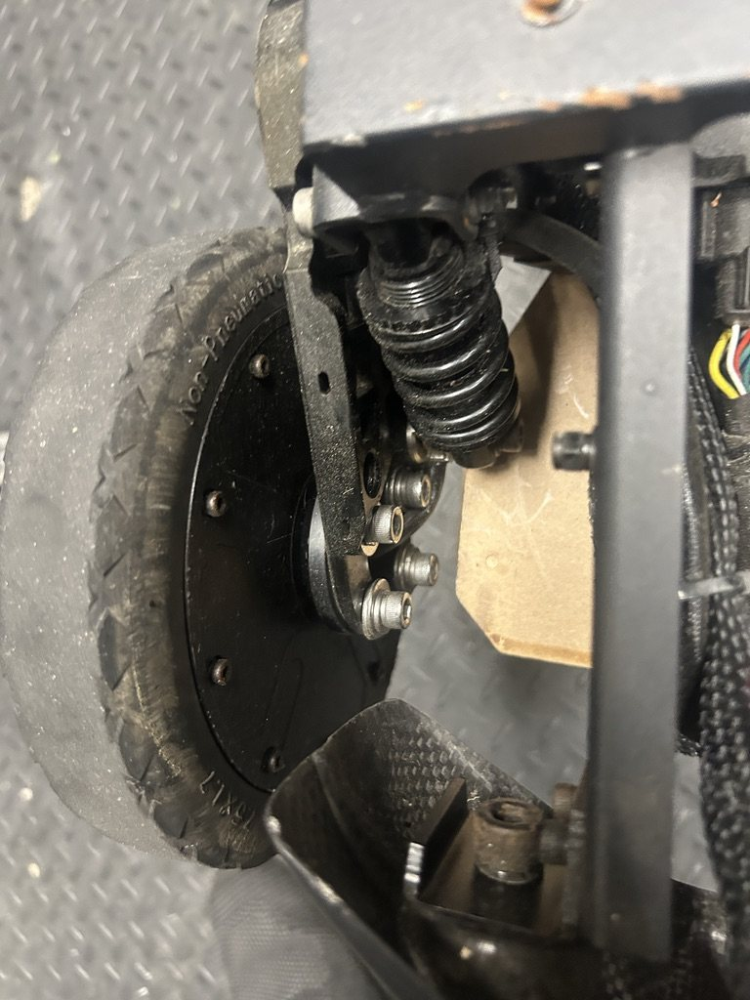
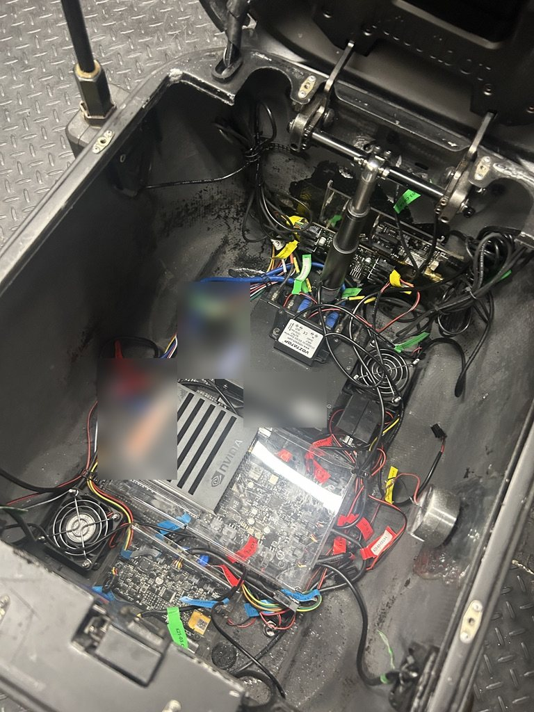
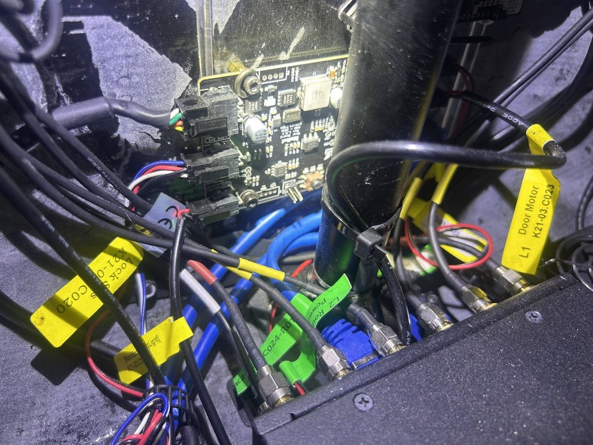
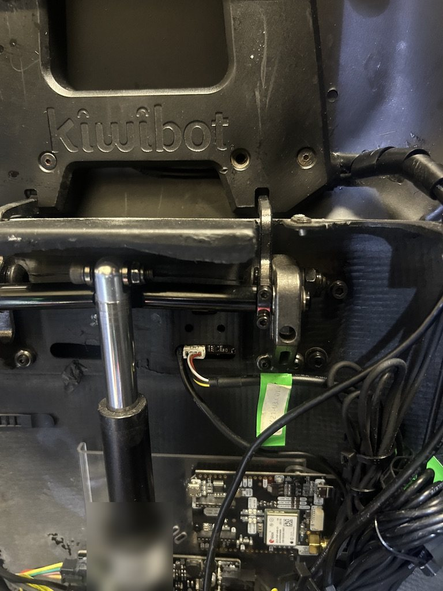
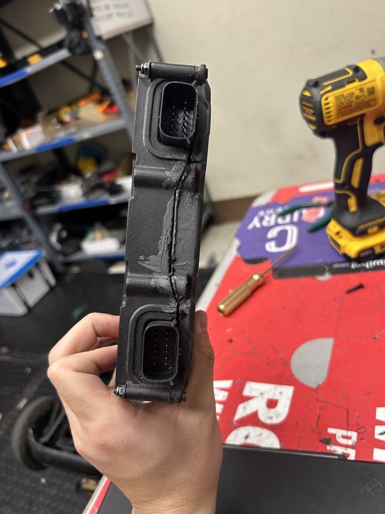
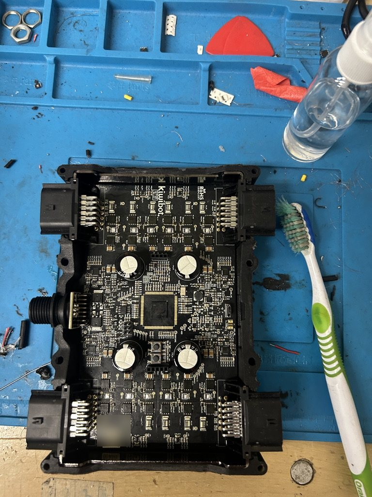
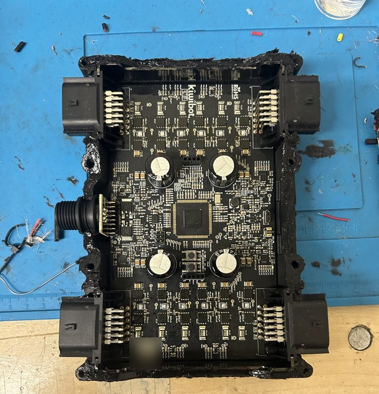
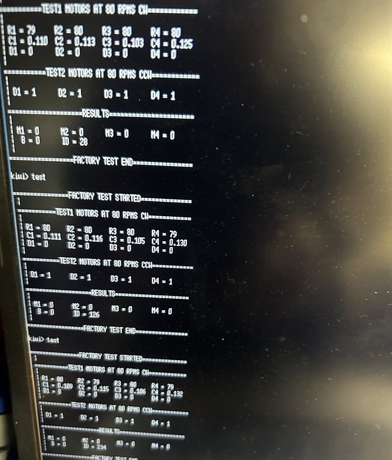

Robotics Operations Engineer Intern, Los Angeles, CA, Jan to May 2026
Kiwi Campus runs a fleet of sidewalk delivery robots. During my internship the fleet grew 76%, from 17 to 30 robots making 127+ deliveries a week, with no added headcount to keep them running.






Servicing drive motor controllers was part of the fleet's weekly maintenance, and I serviced around 4 to 5 of them a week. Here is one job in photos: opening the sealed controller, cleaning the board, and confirming it works with the controller's factory test before it goes back in a robot.

The sealed controller enclosure, before opening.

Board opened and cleaned with a brush and solvent.

Cleaned board, ready for the enclosure to be resealed.

Factory test: all four motors spun at 80 RPM in both directions.